The attenuation of the Butterworth filter is,
.
Substitute 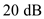 for in the equation.
…… (1)
The parameter  which determines the maximum variation in the passband transmission is,
which determines the maximum variation in the passband transmission is,
.
Substitute 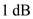 for  in the equation.
in the equation.
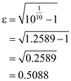
The maximum variation in passband transmission is,
.
The selectivity ratio is,
.
The minimum value of variation in passband transmission is,
.
The attenuation of the Butterworth filter is,
.
Substitute 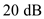 for in the equation.
…… (1)
The parameter which determines the maximum variation in the passband transmission is,
.
Substitute 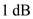 for in the equation.
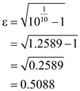
Substitute 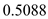 for  in equation (1).
in equation (1).
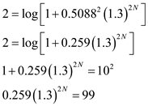
Simplify further.
Apply natural logarithm on both sides of the equation.
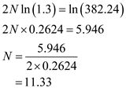
So, choose 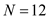.
Thus, the order of the filter is, .
The actual value of the stopband attenuation is obtained by using  .
.
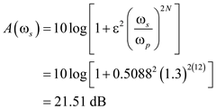
Thus, the actual value of the stopband attenuation is 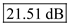.
To have is to be exactly  , consider the following equation.
, consider the following equation.
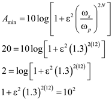
 , the value of is,
, the value of is, 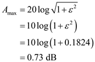
Thus, if  is to be exactly
is to be exactly  , the value of
, the value of  is 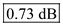.
is 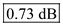.